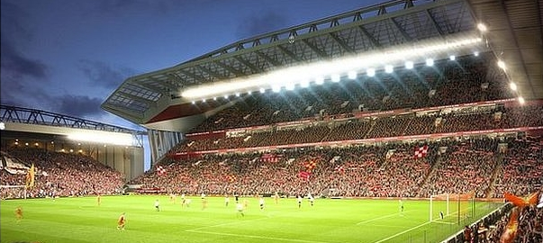
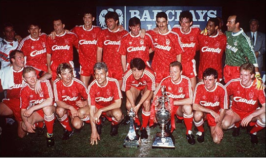
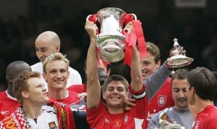

Stadium and Victory
Stadium
Explain

영국 잉글랜드 리버풀(Liverpool)에 있는 축구 경기장으로, 리버풀 FC(Liverpool FC)의 전용 구장이다.
1884년에 건설되었으며, 45,276명을 수용할 수 있다.
최고 관중 기록은 1952년 리버풀과 울버햄프턴 원더러스 팀의 경기로, 61,905명이 입장하였다.
UEFA가 공인한 경기장으로 국제경기를 치를 수 있다. 부대시설로는 영화관, 리버풀 축구 박물관 등이 있다.
Extension

리버풀이 2014년도 말 증축에 관한 공식 승인을 얻어 증축 공사를 시작했다.
리버풀은 오래 전부터 안필드를 증축시키길 원했었고,
계획이 현실화 되면서 45,500명의 관중이 앉을 수 있는 안필드 내 좌석을 59,000개까지 늘이기로 했다.
이 증축 사업은 2016~2017 시즌이 시작될 때 쯤이면 끝날 것으로 보이고,
좌석 이외에도 기자회견장과 연회장, 클럽 샵 주차 시설 등이 더 추가 될 예정이다.
리버풀 시의회에 따르면 이번 안필드 증축 사업으로 유럽대항전 결승전 유치에 대한 기대를 하고 있다고 한다.
UEFA는 챔피언스리그나 유로파리그의 결승전 유치 자격 경기장으로 최소 5만명을 수용할 수 있는 경기장을 원하고 있기 때문이다.
Victory
League Champions

우승 횟수-18회
1900-01, 1905-06, 1921-22, 1946-47, 1963-64, 1965-66, 1972-73, 1975-76,
1976-77, 1978-79, 1979-80, 1981-82, 1982-83, 1983-84, 1985-85, 1987-88, 1989-90
2010-11시즌 맨체스터 유나이티드가 19번째 리그 우승을 함으로써 최다 리그우승 타이틀을 맨체스터 유나이티드에게 뺏겼다.
1992년 프리미어리그 출범 이후 우승한 적이 없다.
FA Cup

우승 횟수-7회
1964-65, 1973-74, 1985-86, 1988-89, 1991-92, 2000-01,
2005-06
FA컵과는 많은 인연이 없었다.
Champions League

우승 횟수-5회
1976-77, 1977-78, 1980-81, 1983-84, 2004-05
리버풀의 자부심, 챔피언스리그 5회 타이틀은 EPL에서 단연 최고다.
그중에 이스탄불에서 열린 2004-05의 결승전, '이스탄불의 기적'은 절대 잊지 못할 것이다.
League Cup

우승 횟수-8회
1980-81, 1981-82, 1982-83, 1983-84, 1994-95, 2000-01,
2002-03, 2011-12
칼링컵으로 더욱 익숙한 리그컵위너스다.
현재는 타이틀 스폰서가 바뀌면서 캐피털 원 컵으로 명칭이 바뀌었다. 1-4부리그까지 총 출동하는 컵대회로써 리버풀이 디펜딩 챔피언이다.
UEFA Cup

우승 횟수-3회
1972-73, 1975-76, 2000-01
유로파리그로, 챔피언스 바로 아래 단계인 UEFA컵이다.
매우 권위있는 컵대회이다.
European Super Cup

우승 횟수-3회
1977, 2001, 2005
챔피언스리그 우승팀과 UEFA컵 우승팀의 대결이다.
FA Charity Shield(=FA Community shield)

우승 횟수-15회
1964, 1965, 1966, 1974, 1976, 1977, 1979, 1980, 1982,
1986, 1988, 1989, 1990, 2001, 2006
현 커뮤니티실드다. 프리미어리그 우승티과 FA컵 우승팀이 시즌 개막전에 벌이는 매치이다.